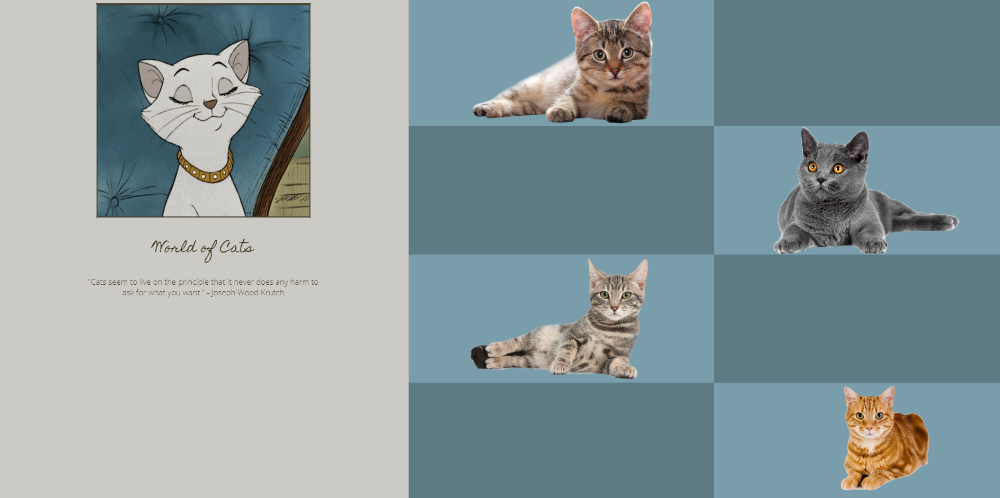
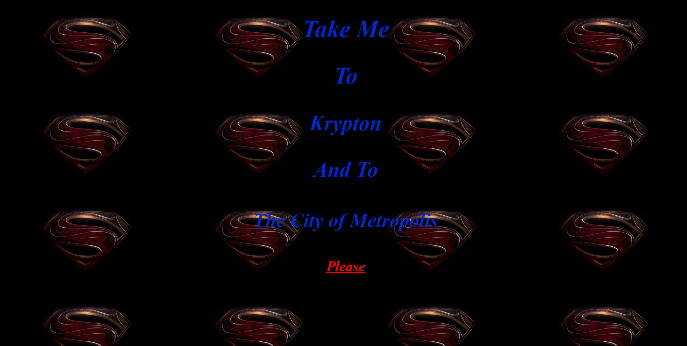
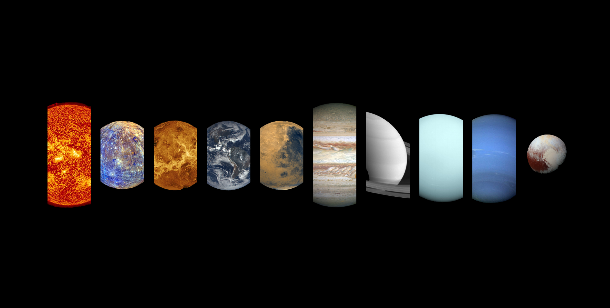
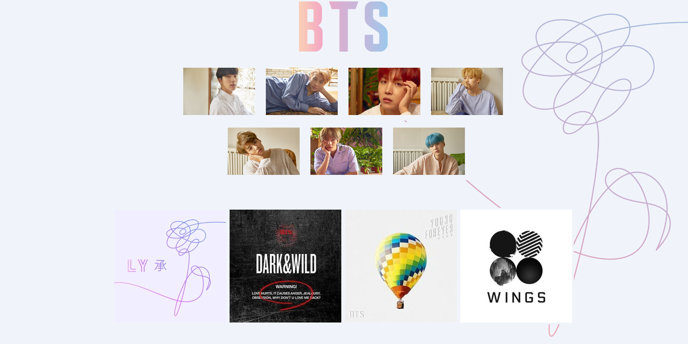
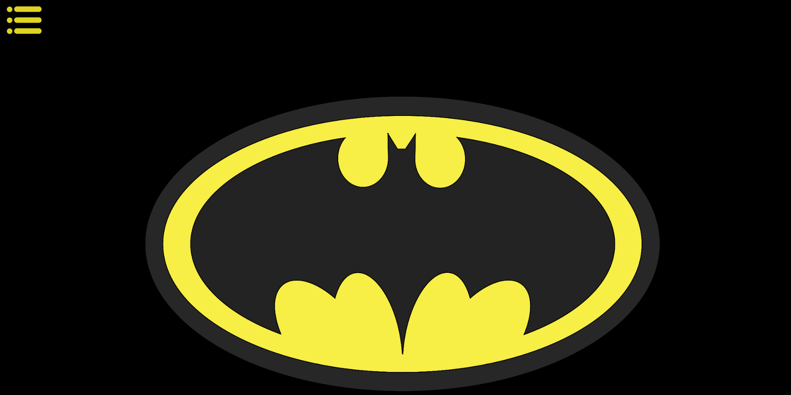
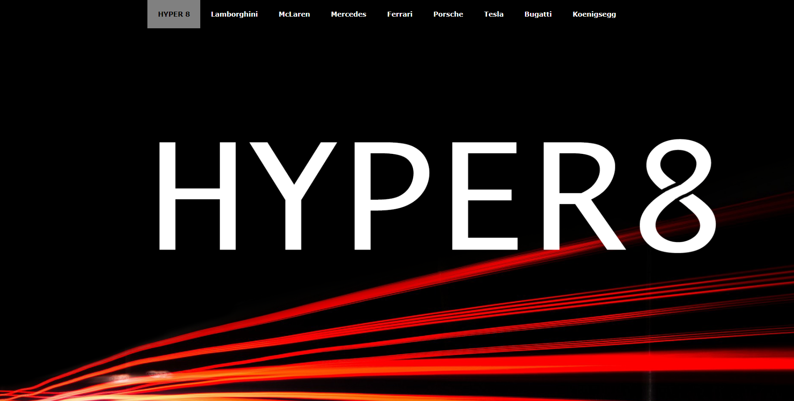

Trina Umana
From the image you can get an idea on what Trina's passion was... cats! She was able to make visually apealing page that was dedicated to cats. She did a great job making it interactive by making the user click around find interesting facts about cats.

Leah Torres
Leah Torres decided to make her website dedicated to Superman. On her page you're able to learn more about Superman and his background. The user is also able to view images towards the bottom that represent Superman. she was able to create this page by making these images do something really cool if you were to click on one of them.

Edward Feves
Edward was passionate about the planets so he decided to dedicate his website to the planets in the solar system. When you view his site you're able to learn a little more on the specifics of each planet.
What it's About
One of the projects the juniors and seniors had to do was design and create an interactive
website of their choice that shows their personal interest in. before they even started coding
their website the had to do the first set with was drawing wireframes. The wireframes are very
useful since you’re setting up how your page/pages will look along with where exactly they’re
going to be placed on your page. During the wireframe stage the students would split up their
page using divs to section off where each piece of content is going to be placed. After getting
feedback about their layout that’s when they were able to start creating their pages. The
students had to use the 3 main languages of website making. The 3 languages were HTML,
CSS,and javaScript. They used the program Notepad ++ to code everything. With the help of
using these 3 languages the students were able to produce their final products some which are
shown on this page.

Koby Wu
Then Junior, Koby Wu, decided to create her website about the world famous boy band BTS. On her website you're able to see each one of the members in the band along with a small description about the members. on her site you're also able to listen to a song of theirs depending on which album cover the user choses to click.

Malakhye Shine
This website was based off of of Bat Man. It was created to show the villains who are in the Bat Man series it also gives the user the choice to click on any of th villains and from there they would be able to see a description about them.

Alejandro Silva
Alejandro has a strong passion for cars and he was able to make an intererting site on something he thought was really cool. On his page you can view more about 8 car brands and it gives you the basic information about how the car runs and what type of engine is used. He also included the price for each car jut to give a little more information about the car